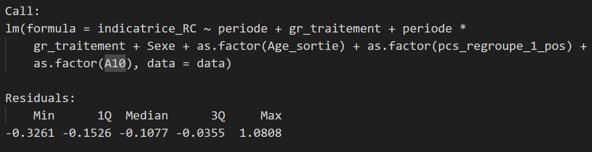
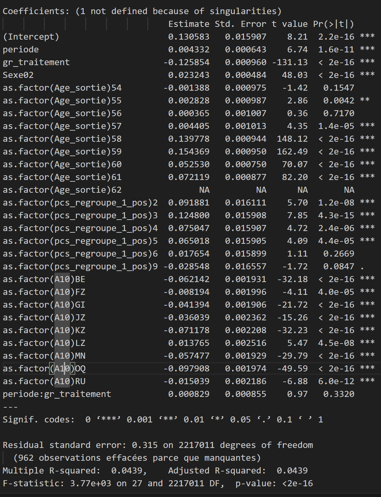

Hypothèse Hypothesis
L’augmentation du coût des ruptures conventionnelles pour les salariés de moins de 62 ans a-t-elle entraîné une réduction du nombre de ruptures conventionnelles chez les salariés seniors ? Has the increased cost of separations by mutual agreement for employees under 62 years of age led to a reduction in the number of negotiated terminations among senior employees?
En théorie économique, une hausse du coût pour l’employeur devrait se traduire par une diminution de la quantité demandée. Nous nous attendons donc à observer moins de ruptures conventionnelles à partir du 1er septembre 2023. In economic theory, an increase in costs for the employer should lead to a decrease in the quantity demanded. We therefore expect to see fewer separations by mutual agreement from September 1, 2023.
Le modèle de double différences The model of difference in differences
La méthode de doubles différences permet de comparer l’évolution du taux de ruptures conventionnelles dans le temps entre deux groupes : un groupe concerné par la réforme (le groupe « traité ») et un groupe non concerné (le groupe « de contrôle »). Dans l’idéal, ces deux groupes doivent être similaires en tout point et ne différer que par leur exposition à la réforme. Dans de telles conditions, si l’évolution observée n’est pas la même dans les deux groupes, on peut attribuer cet écart à la réforme elle-même. Cela permet ainsi d’identifier un effet causal sur le phénomène étudié. The difference-in-differences method allows us to compare the evolution of the rate of separations by mutual agreement over time between two groups: a group affected by the reform (the "treated" group) and a group not affected (the "control" group). Ideally, these two groups should be identical in every respect and differ only in their exposure to the reform. Under such conditions, if the observed evolution is not the same in both groups, this difference can be attributed to the reform itself. This allows us to identify a causal effect on the phenomenon being studied.
Notre groupe traité est constitué des salariés âgés de 58 à 62 ans lors de la rupture de leur CDI, qui sont directement affectés par la réforme du 1er septembre 2023. Dans l’idéal, le groupe de contrôle serait composé des 58-62 ans non touchés par la réforme après cette date, mais un tel groupe n’existe pas. Our group under consideration consists of employees aged 58 to 62 at the time of termination of their permanent contract, who are directly affected by the reform of September 1, 2023. Ideally, the control group would consist of 58-62 year olds not affected by the reform after this date, but such a group does not exist.
Nous retenons donc les 53-57 ans comme groupe de contrôle, en supposant qu’ils présentent des caractéristiques proches des 58-62 ans en termes d’employabilité, de compétences et de situations professionnelles. Bien qu’eux aussi concernés par la réforme, ils ne sont pas directement affectés par la décision de réaliser une rupture conventionnelle juste avant de toucher les indemnités France Travail puis de partir à la retraite. Cette approche permet d’étudier spécifiquement l’impact de la réforme sur le recours aux ruptures conventionnelles pour les 58-62 ans à l’approche de la retraite. We therefore selected the 53-57 age group as our control group, assuming they share similar characteristics with the 58-62 age group in terms of employability, skills, and professional situations. Although also affected by the reform, they are not directly impacted by the decision to enter into a mutual agreement termination just before receiving unemployment benefits and then retiring. This approach allows us to specifically study the impact of the reform on the use of negotiated termination agreements for 58-62 year olds approaching retirement.
Résultats Results
Nous intégrons des variables de contrôle dans notre modélisation, afin de tenir compte des différences structurelles entre les fins de contrats des 53-57 ans et des 58-62 ans (par exemple en termes de catégories socioprofessionnelles ou secteurs d’activité). Leur prise en compte permet ainsi de mieux isoler l’effet propre de la réforme, en neutralisant des facteurs confondants. We incorporate control variables into our model to account for structural differences between contract terminations for those aged 53-57 and 58-62 (for example, in terms of socio-professional categories or sectors of activity). Including these variables allows us to better isolate the specific effect of the reform by neutralizing confounding factors.


Le nombre de ruptures conventionnelles chez les 58-62 ans augmente très légèrement après la réforme, mais ce résultat n’est pas statistiquement significatif (B = 0.0008, p = 0.332). The number of separation by mutual agreement among 58-62 year olds increased very slightly after the reform, but this result is not statistically significant (B = 0.0008, p = 0.332).
Interprétation Interpretation
Ce résultat peut s’expliquer par la difficulté à isoler l’effet propre de la mesure avec nos modélisations. En effet, l’augmentation du coût des ruptures conventionnelles pour les employeurs est entrée en vigueur en même temps que de nombreuses autres mesures, en particulier le décalage progressif de l’âge de départ à la retraite. This result can be explained by the difficulty in isolating the specific effect of the measure with our models. Indeed, the increase in the cost of separations by mutual agreement for employers came into effect at the same time as many other measures, in particular the gradual increase in the retirement age.
Il est donc important de questionner les interactions entre rupture conventionnelle et départ à la retraite. En effet, l’Unédic a montré qu’il existe un effet horizon sur les ruptures conventionnelles, c’est-à-dire un pic d’ouvertures de droit au chômage environ 3 ans avant l’âge légal de départ à la retraite pour les ruptures conventionnelles. It is therefore important to examine the interactions between mutual agreement terminations and retirement. Indeed, Unédic has shown that there is a horizon effect on this type of termination, meaning a peak in unemployment benefit claims approximately 3 years before the legal retirement age for negotiated terminations.
L’existence de cet effet horizon met en lumière deux potentiels effets que le recul de l’âge de la retraite pourrait avoir sur le nombre de ruptures conventionnelles chez les seniors : The existence of this horizon effect highlights two potential effects that raising the retirement age could have on the number of mutual agreement terminations among seniors:
- Un effet de décalage temporel : le pic des ruptures se déplace progressivement vers des âges plus avancés
- Un effet d’incitation comportementale : l’allongement de la durée d’activité exigée pourrait inciter certains salariés proches de la retraite à solliciter des ruptures conventionnelles malgré un coût plus élevé. Cela peut s’expliquer soit parce que les salariés perçoivent une opportunité de sortir du marché du travail avant d’atteindre la retraite, soit parce que les employeurs préfèrent libérer ces salariés coûteux ayant une période prolongée d’emploi. Ce comportement peut se renforcer si les employeurs considèrent que le surcoût des ruptures conventionnelles est compensé par la réduction des coûts salariaux.
- A time lag effect: the peak of separations by mutual agreement is gradually shifting towards older ages A behavioral incentive effect: The extension of the required working period could encourage some employees nearing retirement to request negotiated departures despite the higher cost. This can be explained either because employees perceive an opportunity to leave the labor market before reaching retirement, or because employers prefer to release these costly employees with extended periods of employment. This behavior can be reinforced if employers consider that the additional cost of separations by mutual agreement is offset by the reduction in wage costs.
Il est possible que l’effet d’incitation comportementale compense l’effet de l’augmentation du cout de la rupture conventionnelle. Des recherches supplémentaires pourraient permettre de tester ces hypothèses en isolant les effets avec d’autres modélisations. It is possible that the behavioral incentive effect offsets the effect of the increased cost of separations by mutual agreement. Further research could test these hypotheses by isolating the effects using other models.